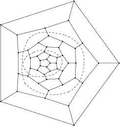

Erratum to Zigzags, Railroads, and Knots in Fullerenes
In Zigzags, Railroads, and Knots in Fullerenes Fig 7a, the fullerene 50:13
(in terms of Fowler-Manolopoulos Atlas) was announced as
the smallest one with self-intersecting railroad. The picture was wrong and
the right one is given below:
